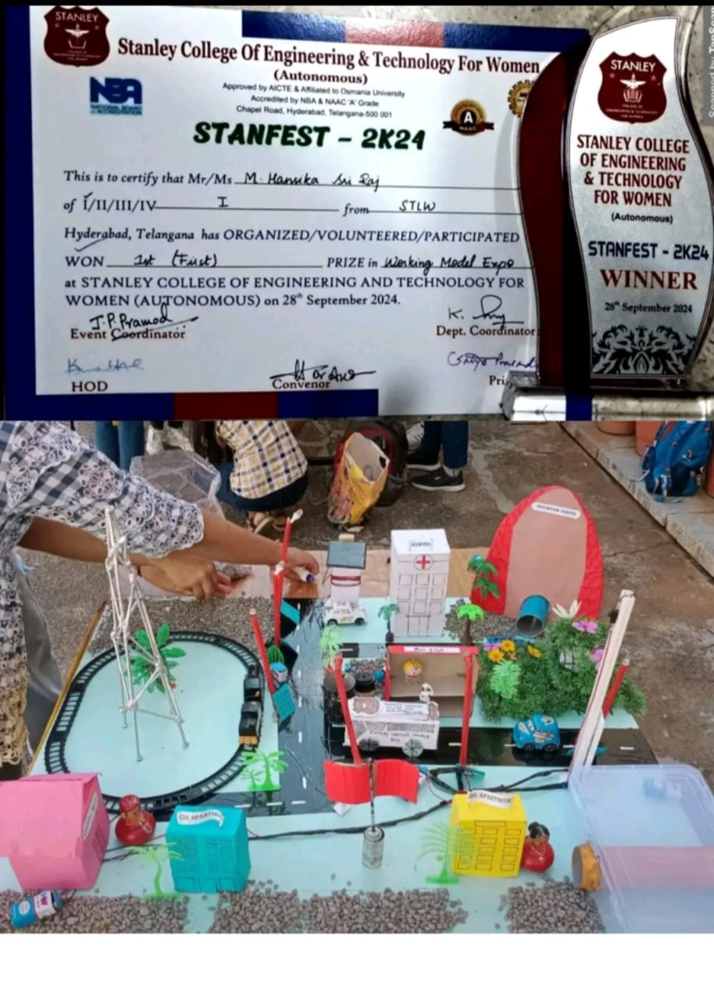
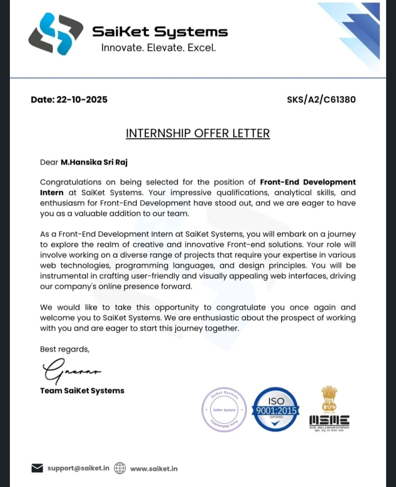

Projects & Achievements
Virtual Fitting Room — Buildathon
Designed and presented an AI-based virtual clothing try-on concept. Worked on idea design, prototyping support, and pitch presentation.
Volunteering & Awards
StanFest 2K24 — Winner (1st Prize)
Awarded 1st prize for a creative and functional working model in the Expo. Played a key role in design, assembly, and presentation.
India March for Science — Volunteer
Actively volunteered and contributed to the science awareness march held in Hyderabad.

Internships
Frontend Development Intern — CodeAlpha
Selected for a one-month frontend development internship focusing on UI/UX and interactive webpage development.

Frontend Development Intern — SaiKet Systems
Worked on building innovative, user-friendly frontend interfaces with real-world project exposure.
